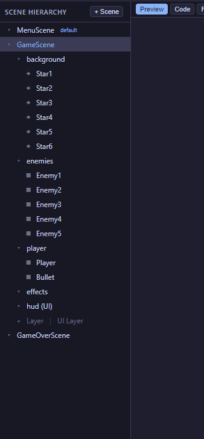
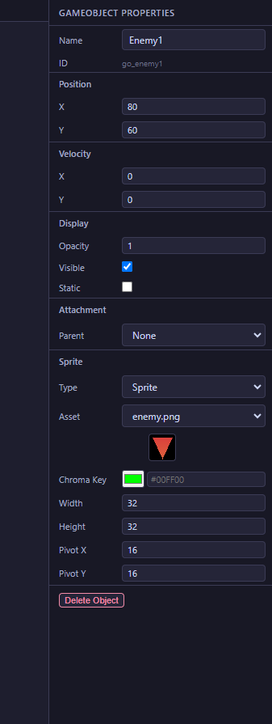
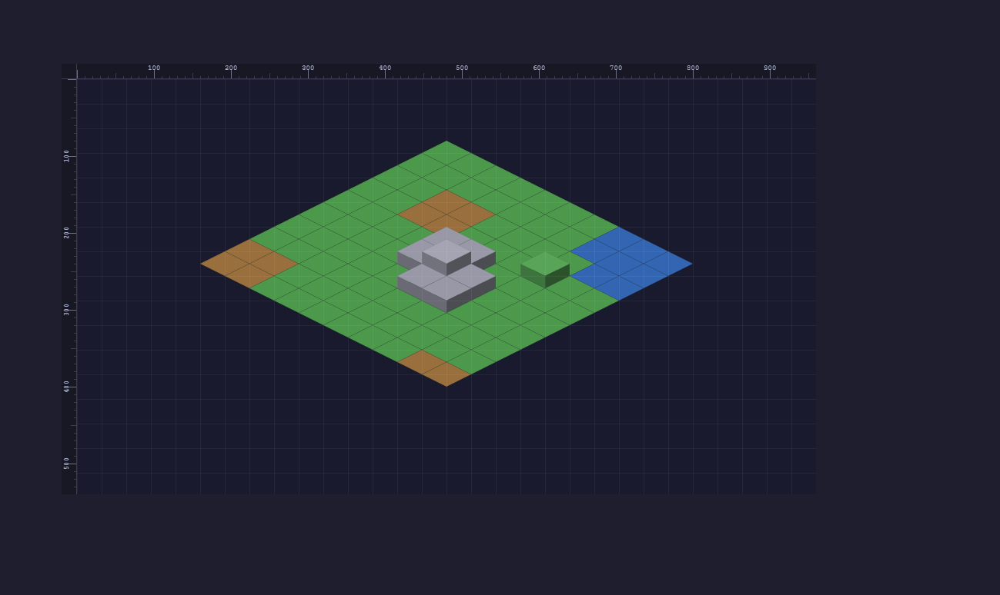
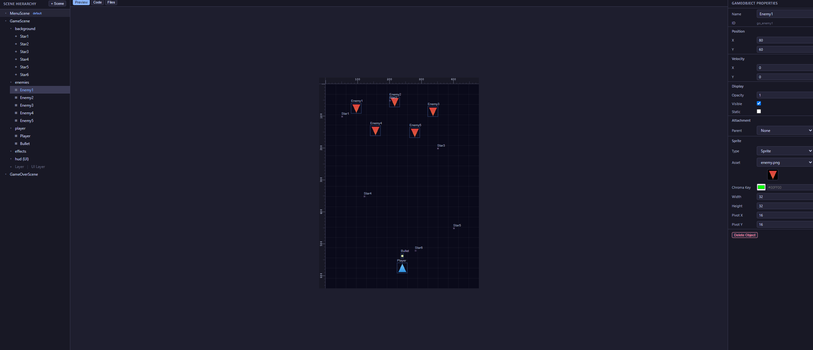

JCGE Documentation
A lightweight 2D game engine built with vanilla JavaScript and HTML5 Canvas. No build tools, no dependencies.
Getting Started
Create an HTML file, include the engine script, and write your game
inside an engineReady listener.
<!-- index.html -->
<script src="path/to/engine/engine-core.js"></script>
<canvas id="canvas"></canvas>
<script src="game.js"></script>// game.js
window.addEventListener("engineReady", function() {
var canvas = document.getElementById("canvas");
var engine = new Engine(canvas);
engine.jumpEngineIntro = true;
engine.displayFPS = true;
engine.OnCreate = function() {
var scene = new MyScene(engine);
engine.registerScene(scene);
};
engine.start();
});engineReady event listener so that
engine classes like Scene, Vec2, etc. are
available.
Project Structure
src/
├── engine/
│ ├── engine-core.js — script loader (include this)
│ ├── engine-parts/
│ │ ├── engine.js — Engine class
│ │ ├── scene.js — Scene class
│ │ └── layer.js — Layer class
│ ├── buffer/ — Drawer, Sprite, SpriteSheet, SpriteAtlas
│ ├── cameras/ — FixedCamera, WorldCamera
│ ├── input/ — InputManager
│ ├── audio/ — Sound, SoundManager
│ ├── animations/ — Tween, Easing, Animation
│ ├── ui/ — UILayer, UIButton, UILabel, UIPanel, UICircle
│ ├── particles/ — ParticleEmitter, Presets
│ ├── physics/ — Collision helpers
│ ├── tilemap/ — Tileset, Tilemap
│ ├── isometric/ — IsometricUtils, IsometricMap, PathFinder
│ ├── lights/ — Lighting, LightSpot
│ ├── shadows/ — ShadowSystem, ShadowCaster
│ ├── assets/ — AssetManager
│ ├── debug/ — DebugOverlay
│ └── util/ — Vec2, Size, RGB, buttons, EventEmitter
├── samples/ — demo projects
└── empty-game-project/ — starter templateEngine
The main class. Creates the game loop with
requestAnimationFrame, manages scenes, and provides
access to all subsystems.
var engine = new Engine(canvas);| Property | Description |
|---|---|
| engine.drawer | The Drawer instance for rendering |
| engine.input |
The InputManager for keyboard/mouse/touch/gamepad
|
| engine.sound | The SoundManager for audio |
| engine.tweens | The TweenManager for animations |
| engine.assets | The AssetManager for preloading |
| engine.debug | The DebugOverlay for debug visuals |
| engine.displayFPS | Show FPS counter (boolean) |
| engine.jumpEngineIntro | Skip the engine splash screen (boolean) |
| Method | Description |
|---|---|
| start() | Start the engine game loop |
| stop() | Stop the engine |
| registerScene(scene) | Add a scene to the engine |
| goToScene(scene, data?, transition?, duration?) | Switch to a scene with optional data and transition |
| setCanvasSize(w, h) | Set canvas dimensions |
| setFullScreen() | Fill the browser window and auto-resize on window resize |
| screenSize() | Returns Size of the canvas |
| mouseOnTopOf(gameObject) | Check if mouse is over a registered GameObject or Element |
| mouseOnTopOfPosition(pos, size) | Check if mouse is inside a rectangle area |
Canvas Sizing
engine.setCanvasSize(960, 540); // fixed dimensions
engine.setFullScreen(); // fill browser window, auto-resizeGPU Acceleration
The engine automatically enables GPU acceleration when available.
The canvas context is created with alpha: false (opaque canvas,
skips page compositing) and desynchronized: true (lower input
latency). The canvas element is promoted to its own GPU-composited layer
via will-change: transform.
Transitions
Use goToScene with a transition type:
engine.goToScene(scene, { level: 2 }, 'fade', 0.5);
Types: 'none', 'fade',
'slide-left', 'slide-right'
Scene
Scenes organize your game into screens. Override the lifecycle methods.
class GameScene extends Scene {
constructor(engine) {
super('GameScene', engine);
}
OnCreate() {
// Runs once when scene becomes active
}
OnUpdate(elapsedTime) {
// Runs every frame (elapsedTime = seconds since last frame)
}
OnDestroy() {
// Runs when leaving this scene
}
}| Method | Description |
|---|---|
| registerGameObject(obj) | Add a GameObject (auto-drawn by engine) |
| registerLayer(layer) | Add a rendering layer |
| setCamera(camera) | Set the scene's camera |
| getIncomingData() | Get data passed via goToScene |
| ended() | End the scene and move to next |
Drawer
Handles all canvas rendering: shapes, text, sprites, and gradients.
Access via engine.drawer.
Shapes
drawer.rectangle(position, size, filled, lineWidth, color, opacity, camera);
drawer.circle(position, radius, startAngle, endAngle, filled, lineWidth, color, opacity, camera);
drawer.line(point1, point2, lineWidth, color, opacity, camera);
drawer.gradient(position, size, startPoint, stopPoint, startColor, stopColor, opacity, camera);Text
drawer.text(text, position, fontSize, font, style, color, opacity, camera);
drawer.textWidth(text, fontSize, font, style); // returns numberSprites
drawer.sprite(sprite, position, opacity, camera);
drawer.spriteSheet(spriteSheet, position, opacity, camera);
drawer.gameObject(gameObject, opacity, camera);Transforms
drawer.drawRotated(sprite, position, angle, opacity);
drawer.drawScaled(sprite, position, scaleX, scaleY, opacity);
drawer.drawFlipped(sprite, position, flipX, flipY, opacity);Utility
drawer.clearWithColor('#000');
drawer.clear();camera parameter, coordinates are in world
space and the drawer applies the camera offset automatically. Without
a camera, coordinates are in screen space.
InputManager
Provides per-frame edge detection for keyboard, mouse, touch, and
gamepad. Access via engine.input.
Keyboard
input.isKeyDown(Keys.W) // held down right now
input.isKeyPressed(Keys.Space) // just pressed this frame
input.isKeyReleased(Keys.Escape) // just released this frameMouse
input.isMouseDown(0) // 0=left, 1=middle, 2=right
input.isMousePressed(0) // just clicked this frame
input.isMouseReleased(0) // just released this frame
input.getMousePosition() // Vec2 relative to canvasTouch
input.isTouchActive() // is there a touch on screen?Touch events are automatically mapped to mouse events (left button).
Gamepad
input.isGamepadButtonDown(buttonIndex, padIndex)
input.getGamepadAxis(axisIndex, padIndex) // returns -1 to 1
input.getGamepad(index) // raw Gamepad objectVec2
2D vector class. Point and Position are
aliases for Vec2. Properties are .X and
.Y.
var v = new Vec2(10, 20);| Method | Returns | Description |
|---|---|---|
| add(v) | Vec2 | Component-wise addition |
| sub(v) | Vec2 | Component-wise subtraction |
| scale(s) | Vec2 | Multiply both components by scalar |
| length() | number | Magnitude |
| normalize() | Vec2 | Unit vector |
| distance(v) | number | Distance to another vector |
| dot(v) | number | Dot product |
| lerp(v, t) | Vec2 | Linear interpolation (t: 0-1) |
| clone() | Vec2 | Copy |
| equals(v) | boolean | Exact equality |
Static helpers: Vec2.zero(), Vec2.up(),
Vec2.down(), Vec2.left(),
Vec2.right()
GameObject
A positioned sprite with movement and collision.
var player = new GameObject(new Sprite(64, 64), new Vec2(100, 100));
player.sprite.loadImage('player.png');
player.velocity = new Vec2(100, 0);
player.move(elapsedTime);
if (player.collisionWith(enemy)) { /* AABB collision */ }Parent-Child Attachments
Attach any GameObject or Element to a parent
so it automatically follows the parent's position with an offset.
Useful for turrets on tanks, HP bars above characters, etc.
// Turret follows tank body with offset
turret.attachTo(tankBody, 10, -15);
// HP bar (UILabel) follows player
hpBar.attachTo(player, 0, -20);
// Detach later
turret.detach();The engine automatically updates child positions each frame before rendering. Works across layers — a UI element can follow a game object in a different layer.
Methods
| Method | Description |
|---|---|
| attachTo(parent, offsetX, offsetY) | Attach to a parent object with X/Y offset |
| detach() | Remove attachment, stop following |
| updateAttachment() | Manually update position (auto-called by engine) |
Sprite & SpriteSheet
// Static sprite
var spr = new Sprite(width, height);
spr.loadImage('image.png');
// Animated spritesheet
// SpriteSheet(name, frameW, frameH, frameSpeed, startFrame, endFrame, imagePath)
var sheet = new SpriteSheet('run', 64, 64, 5, 0, 7, 'sheet.png');
// Attach to animation system
var anim = new Animation();
anim.registerAnimation(sheet);
player.registerAnimation(anim);
player.setAnimation('run');SpriteAtlas
A sprite atlas holds named regions within a single image. Each region can have its own position and size, unlike a SpriteSheet which uses a uniform grid. Ideal for sprites with irregular layouts (e.g. a car with 8 directions at different positions and sizes in one image).
// Define regions: name → { x, y, width, height }
var atlas = new SpriteAtlas('assets/sprites/car.png', {
'north': { x: 0, y: 0, width: 48, height: 64 },
'northeast': { x: 60, y: 10, width: 56, height: 60 },
'east': { x: 130, y: 5, width: 64, height: 48 },
'south': { x: 270, y: 0, width: 48, height: 64 }
}, 'north');
// Switch displayed region
atlas.setRegion('east');
// Get current region rect
var rect = atlas.getRegion(); // { x, y, width, height }
// List all region names
var names = atlas.getRegionNames(); // ['north', 'northeast', ...]Constructor
new SpriteAtlas(imagePath, regions, defaultRegion)| Param | Type | Description |
|---|---|---|
imagePath | string | Path to the atlas image file |
regions | Object | Map of region names to {x, y, width, height} |
defaultRegion | string | Initial region to display (defaults to first key) |
Methods
| Method | Description |
|---|---|
setRegion(name) | Switch to a named region. Updates width and height automatically. |
getRegion() | Returns the current region's {x, y, width, height} rectangle. |
getRegionNames() | Returns an array of all region name strings. |
SpriteSheet when
all frames are the same size arranged in a grid. Use SpriteAtlas
when regions have different sizes or irregular positions within the image.
SpriteAtlas extends Sprite and works with GameObject and
Element — the engine's Drawer detects it automatically.
Chroma Key
Remove a background color from any sprite type (Sprite, SpriteSheet, SpriteAtlas). The engine processes the image on load, replacing pixels matching the chroma key color with transparency. Useful for sprites with solid-color backgrounds (green, blue, purple, etc.).
// Remove green background from a sprite
var spr = new Sprite(64, 64, 'player.png');
spr.setChromaKey('#00FF00');
// With custom tolerance (default is 30, range 0–255)
spr.setChromaKey('#00FF00', 50);
// Works on SpriteSheet too
var sheet = new SpriteSheet('run', 64, 64, 5, 0, 7, 'sheet.png');
sheet.setChromaKey('#FF00FF', 20);
// And on SpriteAtlas
atlas.setChromaKey('#0000FF');Method
sprite.setChromaKey(color, tolerance)| Param | Type | Description |
|---|---|---|
color | string | Hex color to remove, e.g. '#FF00FF' or '#f0f' |
tolerance | number | Color matching tolerance (0–255). Default: 30. Higher values remove more similar colors. |
setChromaKey again re-processes from the
original. Pass null as color to remove chroma key.
Layers
Z-ordered rendering groups within a scene.
var bgLayer = new Layer('background');
bgLayer.registerElement(bgElement);
scene.registerLayer(bgLayer);
var uiLayer = new Layer('ui');
uiLayer.registerGameObject(cursor);
scene.registerLayer(uiLayer);Layers are drawn in registration order (first = behind, last = in front).
UILayer
A screen-space layer that is not affected by camera movement. Use it for HUD elements, menus, and overlays that should stay fixed on screen.
var hud = new UILayer('hud');
hud.registerElement(button);
hud.registerElement(label);
hud.registerElement(panel);
scene.registerLayer(hud);Layer with isUI = true.
The engine renders UI layers after world layers, ignoring any camera offset.
Elements in a UILayer are automatically updated and drawn by the engine.
UIButton
An interactive button element. Supports sprite-based or color-fallback rendering, hover/press states, and click callbacks.
var btn = new UIButton(
new Vec2(100, 400),
new Size(160, 45),
{
label: 'Play',
fontSize: 16,
fontFamily: 'monospace',
fontColor: 'white',
normalColor: '#2a4a6a',
hoverColor: '#3a6a8a',
pressedColor: '#1a3a5a',
onClick: function() { /* start game */ }
}
);
hud.registerElement(btn);| Option | Description |
|---|---|
| label | Button text |
| fontSize | Text font size (default 14) |
| fontFamily | Font family (default 'monospace') |
| fontColor | Text color (default 'white') |
| normalColor | Background color at rest |
| hoverColor | Background color on hover |
| pressedColor | Background color when pressed |
| normalSprite | Sprite for normal state (optional) |
| hoverSprite | Sprite for hover state (optional) |
| pressedSprite | Sprite for pressed state (optional) |
| onClick | Callback when clicked |
| onHover | Callback on hover |
Use btn.showIt = false to hide/show the button dynamically.
Properties isHovered, isPressed, and
isDisabled are available for state checks.
UILabel
A text element for screen-space text display. Update text dynamically with setText().
var label = new UILabel('Score: 0', new Vec2(20, 30), {
fontSize: 14,
fontFamily: 'monospace',
fontStyle: 'bold',
color: '#44aaff'
});
hud.registerElement(label);
// Update text each frame:
label.setText('Score: ' + score);UIPanel
A rectangular background panel for grouping UI elements visually.
var panel = new UIPanel(
new Vec2(10, 10),
new Size(200, 80),
{
fillColor: 'rgba(10, 10, 30, 0.85)',
borderColor: '#334455',
borderWidth: 1
}
);
hud.registerElement(panel);UICircle
A circle shape element. Extends Element.
var circle = new UICircle(
new Vec2(100, 100),
{
radius: 30,
fillColor: '#3498db',
borderColor: '#2980b9',
borderWidth: 2
}
);
layer.registerElement(circle);| Option | Type | Default | Description |
|---|---|---|---|
radius | number | 20 | Circle radius in pixels |
fillColor | string | 'white' | Fill color |
borderColor | string | null | Border/stroke color (null = no border) |
borderWidth | number | 1 | Border line width |
position is the center of the circle
(same as the engine's drawer.circle() method).
Camera
var cam = new Camera(screenW, screenH, worldW, worldH);
cam.addOffset = true; // enable camera-relative drawing
scene.setCamera(cam);WorldCamera
Extends Camera with smooth follow, shake, and zoom.
var cam = new WorldCamera(screenW, screenH, worldW, worldH);
cam.addOffset = true;
cam.smoothFollow = true;
cam.followLerp = 0.1; // 0 = no follow, 1 = instant
// In OnUpdate:
cam.setPositionTo(gameObject, elapsedTime);
cam.update(elapsedTime);| Method | Description |
|---|---|
| setPositionTo(gameObject, dt) | Follow a target with smooth lerp |
| shake(intensity, duration) | Camera shake effect |
| setZoom(level) | Set zoom (1.0 = normal) |
| update(dt) | Update shake and effects (call each frame) |
Tilemap
var tileset = new Tileset('tileset.png', 32, 32);
var mapData = [[0,1,2], [3,4,5]];
var tilemap = new Tilemap(tileset, mapData, cols, rows);| Method | Description |
|---|---|
| draw(drawer, camera) | Render visible tiles (auto camera culling) |
| setCollisionLayer(data) | Set 2D array (1=solid, 0=empty) |
| isSolid(col, row) | Check if a tile is solid |
| isSolidAt(worldX, worldY) | Check if world position hits solid tile |
| getTileAt(worldX, worldY) | Get tile ID at world position |
| addLayer(data) | Add another tile layer |
| worldSize() | Returns Size of the full map in pixels |
Particles
Built-in Presets
var fire = ParticleEmitter.fire(engine, position);
var smoke = ParticleEmitter.smoke(engine, position);
var explosion = ParticleEmitter.explosion(engine, position);
var sparkle = ParticleEmitter.sparkle(engine, position);
// In OnUpdate:
fire.draw(elapsedTime);Custom Emitter
var emitter = new ParticleEmitter(engine, {
position: new Vec2(100, 100),
rate: 10, // particles per emission
minSpeed: 20, maxSpeed: 100,
minAngle: 0, maxAngle: Math.PI * 2,
minLife: 0.5, maxLife: 2,
minSize: 2, maxSize: 6,
startColor: new RGB(255, 200, 50),
endColor: new RGB(255, 50, 0, 0),
gravity: new Vec2(0, 100),
shape: 'circle' // or 'rectangle'
});| Method | Description |
|---|---|
| draw(elapsedTime) | Update and render all particles |
| emit(count) | Emit particles manually |
| stop() | Stop continuous emission |
| clear() | Remove all particles |
Tweens & Easing
Animate any numeric property on any object. Managed by
engine.tweens.
// Animate position over 1 second
engine.tweens.to(player.position, { X: 300, Y: 200 }, 1.0, Easing.easeInOut)
.onComplete(function() { /* done */ });
// Chain tweens
engine.tweens.to(obj, { X: 100 }, 0.5, Easing.easeIn)
.then(obj, { Y: 200 }, 0.5, Easing.easeOut);Easing Functions
linear easeIn easeOut easeInOut easeInCubic easeOutCubic easeInOutCubic bounce elastic
Collision
Static utility functions for collision detection.
Collision.rectRect(posA, sizeA, posB, sizeB);
Collision.circleCircle(posA, radiusA, posB, radiusB);
Collision.circleRect(circlePos, radius, rectPos, rectSize);
Collision.pointRect(point, rectPos, rectSize);
Collision.pointCircle(point, circlePos, radius);All return true if collision detected.
EventEmitter
Pub/sub events for decoupled communication.
var events = new EventEmitter();
events.on('scoreChange', function(score) { /* ... */ });
events.once('gameOver', function() { /* fires once */ });
events.emit('scoreChange', 100);
events.off('scoreChange', callback);
events.removeAll('scoreChange'); // or removeAll() for all eventsSound
// Direct playback
var jump = new Sound('jump.mp3');
jump.play();
// Via SoundManager (recommended)
engine.sound.setMasterVolume(0.8);
engine.sound.setMusicVolume(0.5);
engine.sound.setSFXVolume(1.0);
engine.sound.playMusic(bgMusic); // looping, stops previous
engine.sound.playSFX(jumpSound); // one-shot
engine.sound.muteAll();
engine.sound.unmuteAll();AssetManager
Preload assets before the game starts. Access via
engine.assets.
engine.assets
.loadImage('player', 'sprites/player.png')
.loadSound('jump', 'audio/jump.mp3')
.onProgress(function(loaded, total) { })
.onComplete(function() { engine.start(); });
engine.assets.startLoading();
// Later:
var img = engine.assets.getImage('player');
var snd = engine.assets.getSound('jump');Lighting
2D lighting system using an offscreen canvas with radial gradients. Supports colored lights, flickering, and camera integration.
var lighting = new Lighting(engine);
lighting.ambientAlpha = 0.85; // darkness level (0 = no dark, 1 = pitch black)
lighting.ambientColor = 'black';
// Add lights
var torch = new LightSpot(new Vec2(200, 150), new RGB(255, 160, 50), 180, 0.9);
torch.flicker = 0.25; // flicker amount 0-1
lighting.addLightSpot(torch);
// In OnUpdate (draw AFTER scene, BEFORE UI):
lighting.draw(elapsedTime, camera);| LightSpot Property | Description |
|---|---|
| position | Vec2 world position |
| color | RGB light color (default white) |
| radius | Light reach in pixels (default 150) |
| intensity | Brightness 0-1 (default 1.0) |
| flicker | Flicker amount 0-1 (default 0) |
| active | Enable/disable (default true) |
| Lighting Method | Description |
|---|---|
| addLightSpot(light) | Add a light source |
| removeLightSpot(light) | Remove a light source |
| clearLights() | Remove all lights |
| draw(elapsedTime, camera?) | Render the lighting overlay |
Shadows
2D directional shadow system using an offscreen canvas. Shadows are projected based on a global light angle and rendered with configurable blur and opacity. Overlapping shadows do not stack darker.
var shadows = new ShadowSystem(engine);
shadows.lightAngle = 225; // degrees, where light comes FROM
shadows.shadowLength = 80; // projection distance in pixels
shadows.shadowOpacity = 0.4; // composite alpha
shadows.blur = 4; // soft shadow blur radius
// Add casters
var crate = new ShadowCaster(
new Vec2(100, 200), // position (can share reference with a GameObject)
new Size(50, 50), // footprint size
'rectangle', // type: 'rectangle' or 'ellipse'
1.0 // heightScale (taller objects = longer shadow)
);
shadows.addCaster(crate);
// Tall pillar with longer shadow
shadows.addCaster(new ShadowCaster(new Vec2(300, 150), new Size(20, 20), 'rectangle', 2.5));
// Tree with ellipse shadow
shadows.addCaster(new ShadowCaster(new Vec2(500, 120), new Size(40, 40), 'ellipse', 2.0));
// In OnUpdate (draw BEFORE objects so shadows appear behind):
shadows.draw(camera);| ShadowSystem Property | Description |
|---|---|
| lightAngle | Degrees, direction light comes from (default 225) |
| shadowLength | Base projection distance in pixels (default 40) |
| shadowOpacity | Alpha when compositing onto canvas (default 0.4) |
| shadowColor | Shadow fill color (default 'black') |
| blur | Blur radius in pixels (default 4) |
| ShadowSystem Method | Description |
|---|---|
| addCaster(caster) | Add a shadow caster |
| removeCaster(caster) | Remove a shadow caster |
| clearCasters() | Remove all casters |
| draw(camera?) | Render all shadows (call before drawing objects) |
| ShadowCaster Property | Description |
|---|---|
| position | Vec2 world position (shared reference for auto-tracking) |
| size | Size footprint |
| type | 'rectangle' (projected hexagon) or 'ellipse' (rounded) |
| heightScale | Shadow length multiplier (default 1.0) |
| active | Enable/disable (default true) |
Debug Overlay
Toggle debug visuals via engine.debug.
engine.debug.showCollisionBoxes = true;
engine.debug.showCameraBounds = true;
engine.debug.showObjectCount = true;IsometricUtils
Static utility class for isometric coordinate conversion. No instance needed — all methods are static.
| Method | Description |
|---|---|
| toScreen(col, row, tileW, tileH, height, heightStep, offset) | Convert grid coordinates to screen position. Returns Vec2. Formula: x = (col - row) * tileW/2, y = (col + row) * tileH/2 - height * heightStep |
| toGrid(screenX, screenY, tileW, tileH, offset) | Convert screen position to grid coordinates (ignores height). Returns Vec2 with floating-point col/row |
| getDiamondVertices(screenX, screenY, tileW, tileH) | Get the four diamond vertices [top, right, bottom, left] as Vec2 array |
// Grid to screen
var screen = IsometricUtils.toScreen(5, 3, 64, 32, 2, 16, offset);
// Screen to grid (approximate, ignores height)
var grid = IsometricUtils.toGrid(mouseX, mouseY, 64, 32, offset);
// Diamond vertices for hit testing
var verts = IsometricUtils.getDiamondVertices(sx, sy, 64, 32);IsometricMap
Height-aware isometric tilemap with collision detection, depth-sorted rendering, and height-based mouse picking.
Constructor
var map = new IsometricMap(cols, rows, tileWidth, tileHeight, heightStep);Properties
| Property | Type | Description |
|---|---|---|
| cols, rows | number | Grid dimensions |
| tileWidth, tileHeight | number | Tile diamond size in pixels |
| heightStep | number | Pixels per height unit (default 16) |
| tiles[][] | number | Tile type IDs indexed as [row][col] |
| heightMap[][] | number | Height values indexed as [row][col] |
| collisionMap[][] | number | 0 = walkable, 1 = blocked. Indexed as [row][col] |
| offset | Vec2 | Screen offset for centering the map |
Methods
| Method | Description |
|---|---|
| toScreen(col, row) | Grid to screen with automatic height lookup. Returns Vec2 |
| toGrid(screenX, screenY) | Screen to grid with height-aware diamond hit testing. Returns Vec2 (col, row) or (-1, -1) |
| getHeight(col, row) | Returns height value at tile |
| isWalkable(col, row) | Returns true if tile is not blocked |
| canMoveTo(fromCol, fromRow, toCol, toRow) | Walkable AND height difference ≤ 1 |
| inBounds(col, row) | Returns true if coordinates are within grid |
| draw(drawer, camera, entityCallback) | Render all tiles back-to-front with optional entity callback |
| drawTileHighlight(drawer, col, row, color, camera) | Draw a highlighted diamond overlay on a tile |
Entity Callback
The draw() method accepts an optional callback for depth-sorted entity rendering. The callback is called once per tile during the back-to-front traversal:
map.draw(drawer, camera, function(col, row, screenX, screenY) {
// Draw entities that belong to this tile
if (player.col === col && player.row === row) {
drawPlayer(ctx, screenX, screenY);
}
});PathFinder
Static A* pathfinding for isometric maps. Respects walkability and height constraints.
| Method | Description |
|---|---|
| PathFinder.findPath(map, startCol, startRow, endCol, endRow) | Returns array of {col, row} waypoints (excluding start). Empty array if no path found |
Cost Model
- 4-directional movement (N, S, E, W on grid)
- Flat movement cost:
1.0 - Height change cost:
1.5 - Movement blocked if height difference > 1 or tile is unwalkable
- Manhattan distance heuristic
var map = new IsometricMap(20, 20, 64, 32, 16);
// ... populate tiles, heightMap, collisionMap ...
var path = PathFinder.findPath(map, 0, 0, 10, 10);
if (path.length > 0) {
// Walk each waypoint: path[i].col, path[i].row
for (var i = 0; i < path.length; i++) {
console.log(path[i].col, path[i].row);
}
}Game Loader
For games with many script files, use the loader to load them sequentially after the engine is ready.
<script src="engine/engine-core.js"></script>
<script src="engine/game-loader.js"></script>
<script>
loader([
{ name: "Player", path: "player.js" },
{ name: "Scene", path: "scenes/game.js" }
]);
</script>
Then listen for gameReady instead of
engineReady:
window.addEventListener("gameReady", function() { ... });RGB
var color = new RGB(255, 100, 50, 0.8); // r, g, b, alpha
color.toString(); // "rgb(255, 100, 50, 0.8)"
color.toStringWithoutAlpha(); // "rgb(255, 100, 50)"Size
var s = new Size(100, 50); // s.width, s.heightKeys & MouseButton
Constants for input detection. Uses
KeyboardEvent.code values.
| Group | Constants |
|---|---|
| Arrows |
Keys.ArrowUp, ArrowDown,
ArrowLeft, ArrowRight
|
| Letters | Keys.A through Keys.Z |
| Digits | Keys.Digit0 through Keys.Digit9 |
| Function | Keys.F1 through Keys.F12 |
| Special |
Keys.Enter, Space, Escape,
Tab, Backspace, Delete
|
| Modifiers |
Keys.ShiftLeft, ControlLeft,
AltLeft, MetaLeft (+ Right)
|
| Mouse |
MouseButton.LEFT (0), MIDDLE (1),
RIGHT (2)
|
Visual Editor
JCGE comes with a standalone visual editor built with Vite + React + Electron. It lets you visually compose scenes, manage layers, place game objects, configure cameras, paint isometric tilemaps, and export playable games — all without writing boilerplate.




Features
- Create and manage multiple scenes with drag-and-drop
- Add layers with z-ordering and UI/world toggle
- Place GameObjects and Elements with sprite preview
- Configure FixedCamera or WorldCamera per scene
- Isometric map editor with tile type, height, and collision painting
- Asset manager for sprites and audio with rename support
- Scene script editor with CodeMirror (syntax highlighting)
- Live preview with play/edit toggle
- Export to standalone HTML game
Running the editor
cd jcge_editor
npm install
npm run electron:dev # dev mode with hot reload
npm run electron:build # build standalone appSource code and documentation: github.com/slient-commit/js-canvas-game-engine
Tests
The engine and editor both include unit test suites powered by Vitest. Tests cover the pure-logic parts of the codebase: math utilities, collision detection, animations, pathfinding, event system, and the editor's state management.
Zero-dependency architecture
The engine itself is pure vanilla JavaScript with no
npm dependencies. It loads via a single
<script> tag and runs directly in the browser.
The node_modules folder and package.json
inside src/engine/ exist only for the test
runner — they are not used at runtime and do not affect the
engine in any way. You can safely delete them and the engine will
continue to work exactly the same. They are only needed if you want
to run the tests.
vitest) are devDependencies
used exclusively for testing. No build step, bundler, or
node_modules is required to use the engine in a game.
How the engine tests work
Engine source files declare global classes (class Vec2,
class Tween, etc.) without export
statements, since they are designed for <script>
tag loading in browsers. To test them in Node.js, the test setup
file reads each source file with fs.readFileSync,
transforms the declarations into globalThis
assignments, and evaluates them with vm.runInThisContext.
This makes all engine classes available as globals inside tests,
exactly as they would be in a browser.
Running the tests
# Engine tests (181 tests across 8 files)
cd src/engine
npm install # one-time: installs vitest
npm test # runs all tests
npm run test:watch # re-runs on file changes
# Editor tests (92 tests across 2 files)
cd jcge_editor
npm install # one-time: installs vitest + other deps
npm test
npm run test:watchTest coverage
| File | Tests | What it covers |
|---|---|---|
| vec2.test.js | 36 | Constructor, add/sub/scale, length, distance, dot, normalize, lerp, clone, equals, statics, aliases |
| rgb.test.js | 8 | Constructor defaults, custom values, toString, toStringWithoutAlpha |
| collision.test.js | 26 | rectRect, circleCircle, circleRect, pointRect, pointCircle — overlap, touching, separated, edge cases |
| easing.test.js | 31 | All 9 easing functions: boundary values, curve shapes, bounce range, elastic oscillation |
| eventEmitter.test.js | 17 | on/emit, once, off, removeAll, argument passing, chaining |
| tween.test.js | 22 | Interpolation, easing, completion, onComplete/onUpdate callbacks, chaining, TweenManager |
| isometricUtils.test.js | 20 | toScreen, toGrid round-trip, height offset, getDiamondVertices shape |
| pathFinder.test.js | 21 | A* pathfinding: straight/diagonal paths, obstacles, height cost, out of bounds, waypoint format |
| Editor tests (jcge_editor/) | ||
| projectReducer.test.js | 70 | All 30+ reducer actions, createEmptyProject, scene/layer/object CRUD, asset renaming, selectors |
| fileHandlers.test.js | 22 | isPathSafe and isSafeFilename security validation — path traversal, null inputs, edge cases |
Adding new tests
For the engine: create a .test.js file in
src/engine/tests/. If your test uses a class that
isn't loaded yet, add its source file path to the
files array in tests/setup.js. The class
will then be available as a global in your test.
For the editor: place test files in a __tests__/
directory next to the module being tested, or anywhere Vitest can
discover them. Editor modules use standard ES imports, so no
special setup is needed.